XALCYON: A procedural 12-bit dual-analog adventure
About
Xalcyon is a challenging multidirectional PC shooting adventure game with dual analog stick control and procedurally generated levels. XALCYON is the sequel to XONG, and exhibits the same 8-bit home-computer-game audiovisual aesthetic that I employed in XONG—now featuring the next generation in 12-bit graphics, and the power of retro voice synthesis!
Xalcyon is free software built with the free Blocky game engine, and is programmed entirely in Common Lisp.
Screenshots
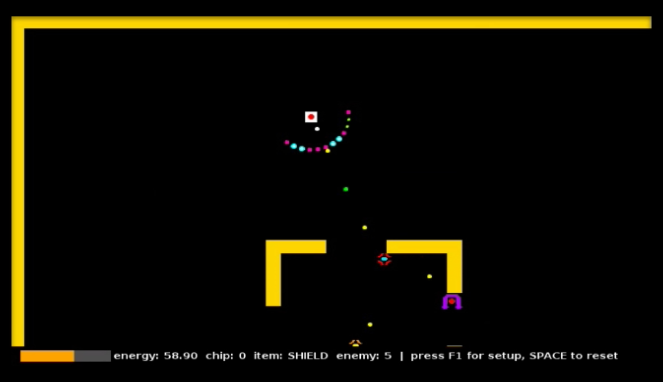
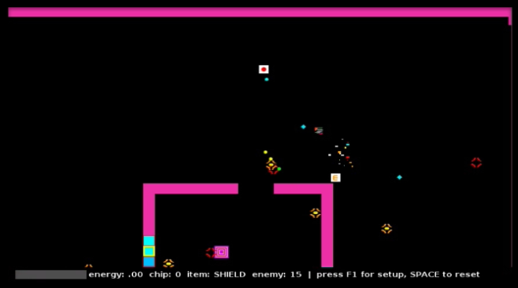
(There are many more screenshots at the bottom of the page.)
Status and Download
As of February 10, 2012 the game is in beta release for Windows and GNU/Linux. A Mac build is in the works. Please visit the downloads page to find the appropriate download for your system.
Gameplay
Xalcyon requires a USB (or other compatible) game controller with dual analog sticks and at least three buttons. The player uses the analog sticks to independently control both movement and aiming/firing of his robot as it fights through a series of ten increasingly difficult levels. The sector maps are randomly generated from a library of templates specifying different terrain and enemy combinations. Once all enemies on a level are destroyed, the gateway to the next level will appear.
As in XONG, one single hit from any bullet or enemy or explosion will kill you and completely end the current game. However, you can simply hit spacebar to generate a fresh scenario starting from level 1. Sudden permadeath increases tension, but characters are quite disposable, so it becomes a quest for perfection.
Your robot can hold and use one item at a time. The player starts the game with a shield which blocks bullets coming from the direction the right stick is aiming. The shield (or other item) can be activated by pressing the left trigger. Items are found in boxes, or left behind by smashed enemies.
The main gun is always equipped, and can be fired by pressing or holding the right trigger. However, both shield and gun must consume energy to operate. Your robot has a limited energy supply, and the gauge will run out quickly if you use the shield for a long period (even faster if you are also shooting the main gun.) When energy is too low, you will not be able to use guns or shields for a few moments, and will be highly vulnerable while you wait for it to recharge.
The player can equip a bomb instead of the shield; these explode a few seconds after being fired, and they stick to enemies and walls. But there are enemies that can fire bombs at you too.
"Monitors" are orange robotic drones that patrol the fortress, firing a spread of bullets before dashing away from the player. Highly dangerous in groups. They turn red when they're badly damaged.
"Rooks" are purple spinning guys with a red nose and they fire bombs at you.
"Biclops" inhabits Delta sector and is quite nasty, spewing radiation, especially when he dies and his deadly pieces fly everywhere!
Much more to come…
My other games
See my games page.
More images of XALCYON
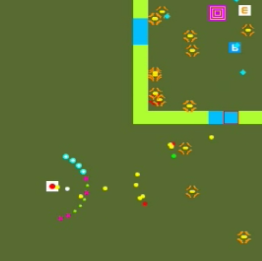
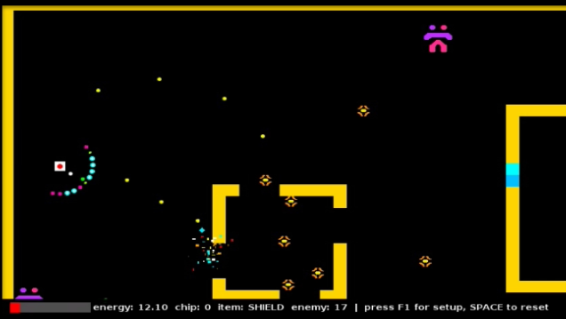
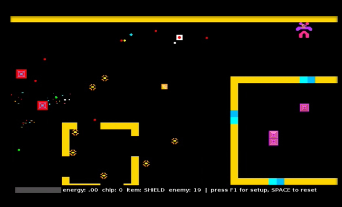
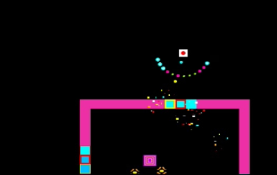
 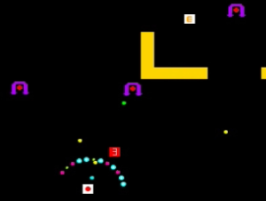
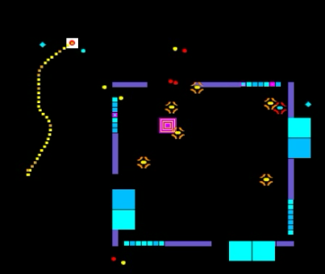
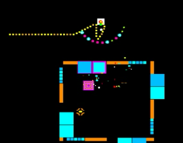
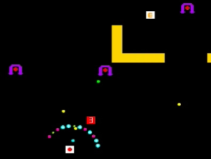
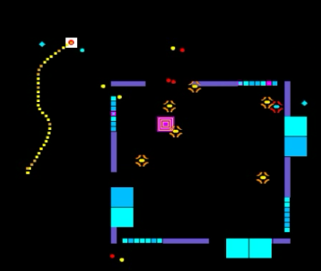
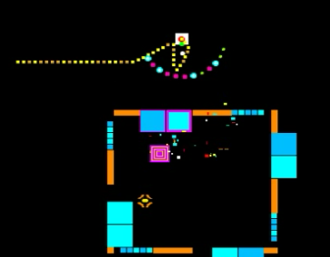
 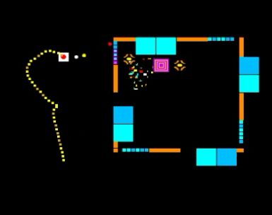
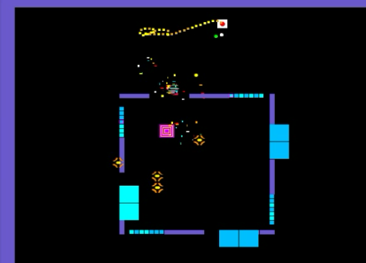
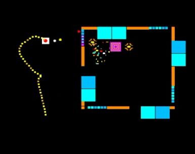
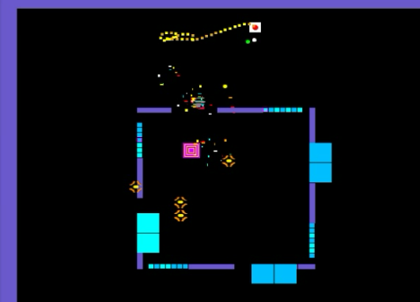